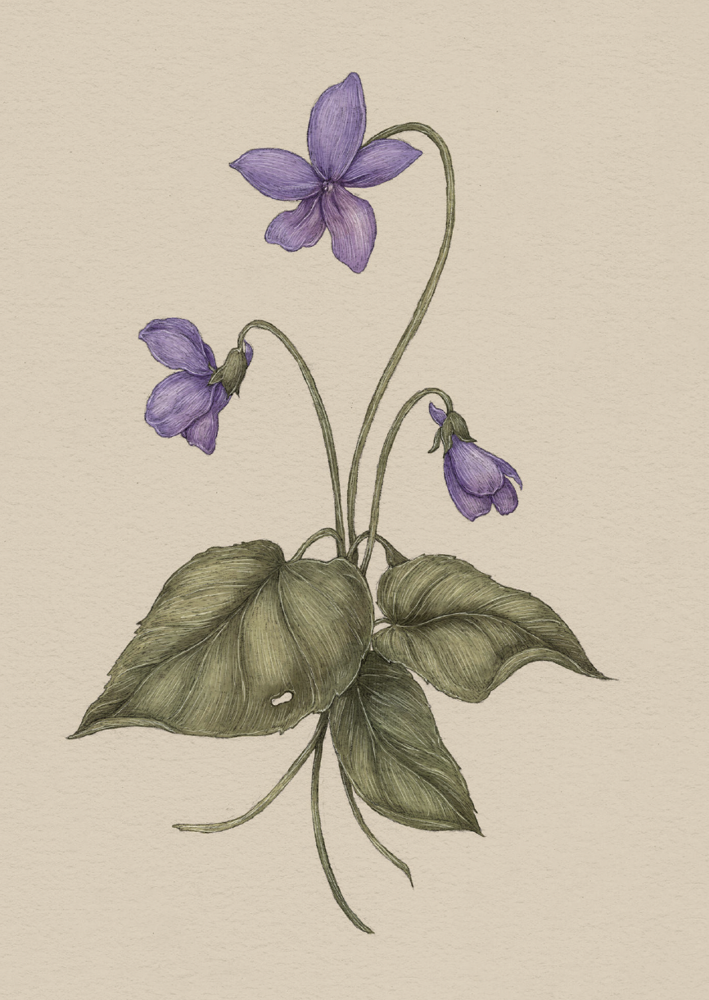

Plate VIOLET
The Language of Flowers
Violet Study

Violet
Viola odorata
Definition: A flower associated in floriography with modesty.
Victoria's Definition: Modest worth
Meaning
Modesty
Origin
The violet grows low to the ground with its head bowed: a picture of modesty. Originally the flower
of Valentine's Day, it is said that Saint Valentine, while jailed for attempting to spread
Christianity, crushed violets growing near his cell in order to make ink. One legend claims he used
this ink to write a letter to his jailer's daughter, whom he had healed from blindness, signing it,
"Your Valentine," thus inspiring centuries of romantic notes.
Pair With
- Bluebell for a humble friend who means the world to you
- Laurel to show a friend you're proud of their accomplishments